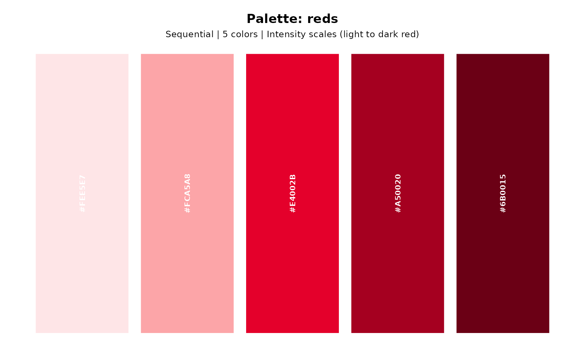

Extends ggplot2 with Insper's identity, providing custom themes, color palettes, and specialized plotting functions for academic and institutional use. This is not an official Insper product.
This package extends ggplot2 with Insper Instituto de Ensino e Pesquisa visual identity, providing custom themes, color palettes, and specialized plotting functions for academic and institutional use.
**Disclaimer:** This is an unofficial package created by an Insper employee, not an official Insper product. This package is developed independently and is not endorsed, supported, or maintained by Insper Instituto de Ensino e Pesquisa.
Main Functions
**Themes:**
theme_insper- Apply Insper's visual identity to plots
**Colors:**
get_insper_colors- Extract individual Insper brand colorsshow_insper_colors- Visualize Insper brand colorsshow_insper_palette- Visualize color paletteslist_palettes- List available color palettes
**Scales:**
scale_color_insper_d/scale_fill_insper_d- Discrete color scalesscale_color_insper_c/scale_fill_insper_c- Continuous color scales
**Plot Functions:**
insper_barplot- Create bar plots with Insper themeinsper_scatterplot- Create scatter plotsinsper_timeseries- Create time series plotsinsper_boxplot- Create box plots
**Utilities:**
save_insper_plot- Save plots with institutional defaultsformat_num_br- Format Brazilian numbers (supports currency and percentages)
Color Palettes
The package includes 15 pre-defined palettes:
**main** - Primary Insper brand colors
**reds, oranges, teals, grays** - Sequential single-color gradients
**diverging, red_teal, red_teal_ext** - Diverging palettes for data with a meaningful center
**bright, contrast, categorical** - Qualitative palettes for categorical data
**accent_red, accent_teal** - Accent palettes for emphasis
**categorical_ito, categorical_tab, categorical_set** - Colorblind-safe categorical options
Use list_palettes() to see all available palettes with detailed information.
Getting Started
library(insperplot)
library(ggplot2)
# Create a basic plot with Insper theme
ggplot(mtcars, aes(x = wt, y = mpg)) +
geom_point(color = get_insper_colors("reds1"), size = 3) +
theme_insper() +
labs(title = "Fuel Efficiency vs Weight")
# Use Insper color palettes
ggplot(mtcars, aes(x = factor(cyl), fill = factor(cyl))) +
geom_bar() +
scale_fill_insper_d(palette = "reds") +
theme_insper()Package Development
This package follows modern R development best practices:
Native pipe operator (
|>) throughoutModern tidyverse patterns (dplyr 1.1+)
Comprehensive documentation with roxygen2
Continuous integration with GitHub Actions
References
For official Insper communications and materials, please visit: https://www.insper.edu.br/
See also
Useful links:
Report bugs at https://github.com/viniciusreginatto/insperplot/issues
Useful links:
Report bugs at https://github.com/viniciusoike/insperplot/issues
Package website at https://viniciusoike.github.io/insperplot/
Author
Maintainer: Vinicius Reginatto viniciusor@insper.edu.br
Examples
# View available colors
get_insper_colors()
#> white off_white black gray_light gray_med gray_meddark
#> "#ffffff" "#fefefe" "#000000" "#E6E7E8" "#BCBEC0" "#414042"
#> gray_dark reds1 reds2 reds3 oranges1 oranges2
#> "gray20" "#E4002B" "#FCA5A8" "#A50020" "#F15A22" "#F58220"
#> oranges3 magentas1 magentas2 magentas3 teals1 teals2
#> "#FAA61A" "#A62B4D" "#C43150" "#EE2A5D" "#009491" "#27A5A2"
#> teals3
#> "#3CBFAE"
# Show color palettes
show_insper_palette("reds")

if (FALSE) { # \dontrun{
# Create a simple plot (requires fonts to be set up)
library(ggplot2)
ggplot(mtcars, aes(x = wt, y = mpg)) +
geom_point(color = get_insper_colors("reds1")) +
theme_insper()
} # }